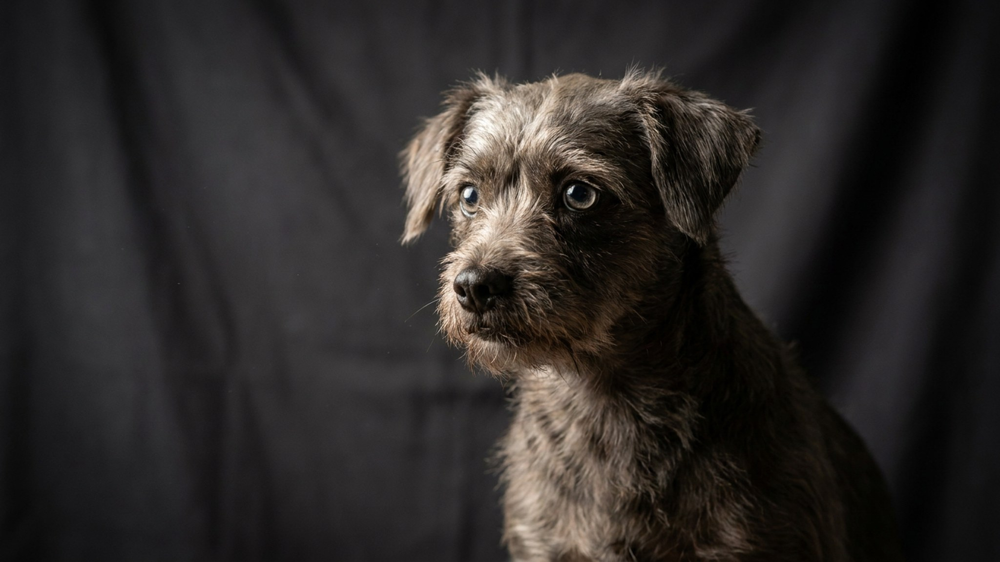

Той-терьер весит как пакет молока — 2–3 кг. Прыжок с дивана для него по нагрузке как для нас прыжок со второго этажа, а большинство травм этой породы случается дома, на ровном месте, из-за привычек, которые хозяин даже не замечает. Ниже — четыре главных риска и простые правила, которые берегут хрупкие лапы и зубы той-терьера.
🐾 Здоровье питомца под контролем
AI-ветеринар, дневник здоровья и персональные советы для вашего питомца — установите AnimaLife бесплатно.
Той-терьер — одна из самых миниатюрных пород в мире. Тонкие трубчатые кости, лёгкий костяк и крошечный вес дают изящный силуэт, но снижают запас прочности. У многих линий открытый родничок на черепе сохраняется всю жизнь, а коленные суставы склонны к смещению.
Это не значит, что собака болезненная. Здоровый той-терьер активен, прыгуч и бесстрашен — и именно бесстрашие чаще всего его подводит: он не оценивает высоту и лезет туда, откуда падать опасно.
Цель — убрать саму возможность опасного прыжка и падения, а не запрещать собаке двигаться.
У мелких пород зубы стоят тесно, налёт копится быстро, и уход за полостью рта — не косметика, а профилактика. Приучайте к чистке зубов с щенячьего возраста и обсудите с ветеринаром схему домашнего ухода.
Второй момент — вес. Лишние 300–400 граммов для тоя огромная нагрузка на тонкие суставы. Кормите по норме, не «со стола», и взвешивайте собаку дома раз в месяц. Если заметили хромоту, щёлканье в колене или что собака поджимает лапу — не ждите, покажите ветеринару.
Той-терьер — преданный, смелый и активный компаньон, который проживёт 12–15 лет без единого перелома, если хозяин один раз перестроит быт под его размер. Хрупкость породы — не приговор, а просто список привычек, которые стоит завести.
🐾 Первая помощь — всегда под рукой
AnimaLife подскажет, что делать в тревожной ситуации с питомцем ещё до визита к врачу. Откройте в один тап.
🐾 Понравился разбор?
Подпишитесь на канал — каждый день разбираем по одному тревожному симптому у кошек и собак: что в пределах нормы, а когда пора к врачу. Подпишитесь, чтобы не пропустить разбор, который может спасти здоровье вашего питомца.
Материал носит информационный характер и не заменяет очную консультацию ветеринара.